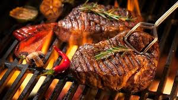

Mouth Watering Nyama Choma

Description
Nyama Choma is marinated in a flavorful herb and spice marinade, and then slowly grilled, in this ultimate mbuzi nyama choma recipe.
This is a very popular dish in East Africa, but especially in Kenya and Tanzania.
It normally is enjoyed together with kachumbari and Ugali
Try this recipe and you won't regret it.
Ingridients
- lamb ribs
- Spices (cumin and paprika)
- Vegetables (fresh ginger, garlic, onion and chillies)
- Lemon
- Cooking oil
- Salt
Steps
- Prepare the marinade by blending together the garlic, onion, paprika, lemon juice, cumin and chilling.
- Make slits in the ribs to ensure that the marinade penetrates the meat
- AMrinade the ribs and cover with aluminum foil for at least 2 hours in the fridge
- Remove the meat from the fridge and allow it to attain room temperature
- Ensure that the open grill temperature is medium at best
- Grill each side for 3 minutes
- Cover the ribs with an Aluminum foil
- Transfer the meat to a medium heat grill for 1.5 hours turning from time to time
- Prepare Kachumbari with Onions, Tomatoes, Chilli and Coriander
- Enjoy your meal
Go Home